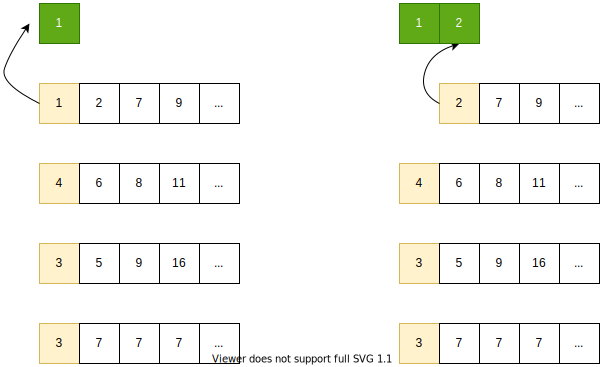

下一题 Hard。23 号，合并 K 个有序链表。
英文：https://leetcode.com/problems/merge-k-sorted-lists/
中文：https://leetcode-cn.com/problems/merge-k-sorted-lists/
不同解法涉及多个知识点，要优化也有很多细节可以调。只求 accept 的话，比较水，最好把不同做法都试试。
之前已经讲过链表基本操作，这次又遇到链表，就只讲算法部分，数据结构细节略过。
理解题意
一句话概括
给定 k 个 有序 链表，合并成一个。
这个环节是强调一定要先概括题意。特别是长篇大论讲故事的题。这题原题也就一句话，但按惯例还是给一句。
例子
见测试用例
约束
没有给出。
但我们可以注意到，既然没有给约束条件，也就是要考虑各种意义的空值。
另外，为了后续讨论方便，假定所有链表的总节点数为 N。
测试
惯例先贴测试代码，通过写测试代码体现对题目的理解。
|
|
分治
如果不必考虑效率，那么这道题只要会 链表的基本操作 ，就可以做。
依次合并
举例说，我们有 8 个有序链表，分别编号 1 ~ 8。合并 8 个链表的代码不好写；何况 k 不是一个固定的值，写出了合并 8 个链表的代码，k 还可以是 9、10、100、1000。
但合并两个链表很容易，两两合并，总会合并到一个：
- 取出排在前面的两个链表，一开始是 1 和 2；
- 合并这两个链表；
- 方便起见，合并后的链表还叫 1，链表 2 已经被 1 包含了，排在最前面的链表是 1 和 3，回到步骤 1)；
- 以此类推，重复步骤 1) ~ 3)，直到只剩下链表 1。
|
|
这就是分治法。分而治之（Divide and Conquer） 。
当我们
- 遇到一个很难解决的问题（合并 k 个链表），
- 这个问题可以分解成 多个 / 多层 子问题，并且子问题的解可以组合成原问题的解，
- 最小的子问题很容易解决（合并两个链表），
- 子问题结构相似，解法相近（合并）。
就可以考虑分治法。
这种写法非常简单，就不贴代码了。需要提醒的是，因为链表 1 越来越长，对链表 1 进行遍历和修改需要的操作越来越多。此时可以将 合并（merge）成新链表 ，改为其中一个链表 原地插入（insert） 另一个（最好是短链表的节点插入长链表） ，减少不必要的修改操作。
复杂度
已知链表数为 k，总节点数为 N。最坏的情况下，第一个链表的长度为 N - k + 1，后续每个链表都只有一个节点，而且该节点比前面所有节点都大（换言之，每次都要比较到最后，才能找到插入位置）。
第一次合并，遍历了 N - k + 2 个节点，往后每次增加一个，总共合并 k 次。易得，时间复杂度为 O（kN），空间复杂度为常数 O(1) 。
哈夫曼合并
前面的做法，效率不太高，原因是越来越长的链表 1 偏偏参加了最多次合并（一个不落全参与了），导致总的遍历和操作节点数很高。考虑不同情况：
- 链表长度平均的情况下，链表 1 也会越来越长；
- 最坏情况下，链表 1 一开始就最长，效率就更糟糕；
- 仅当链表长度差距较大，而且从短到长排列时，这种做法效率比较高。
我们一般考虑最坏情况（大 O 分析）；如果最坏情况概率很低和影响不大则考虑平均情况。明显两种情况表现都不佳。
尝试将最坏情况转化成最优情况：
- 取出长度最短的两个链表；
- 合并这两个链表，并将合并后的链表放回；
- 重复步骤 1) 2) 直到只剩下一个链表。
实际上这就是构造了一个 以链表长度为权值的哈夫曼树 。（篇幅关系，哈夫曼树不在此展开。）哈夫曼树具有带权路径最短的性质，而合并开销正是跟链表长度相关，毫无疑问，光看合并开销这样是最优的。
然而构造哈夫曼树，需要额外的开销：
链表并不能直接获取长度，需要 O(N) 时间复杂度遍历所有节点；
链表之间并非按长度排列，需要排序；考虑到合并之后的链表还得重新加入排序，优先队列是最佳选择，时间复杂度 O(k log(k) ) ，空间复杂度 O(k)。
通过这个 O(N + k log(k) ) 的操作之后，所有比 链表初始长度相等 坏的情况，都能通过让短的先合并来优化。换言之，长度均分成了最坏情况。这种情况下，链表两两合并，每个初始链表参与合并的次数一致，均为 log(k)；每次将 N 个节点遍历一遍（详见下一小节）。时间复杂度为 O(N log(k))。
总的时间复杂度为 O(N + (N+k) log(k)) ，空间复杂度 O(k)。
这种做法花费了额外的时间和空间开销，大大增加了代码的复杂性，优化的效果却依赖数据的特殊性：数据分布越不均匀，效果越好。在我看来，这属于典型的 过早优化 。为不确定的优化效果，破坏代码的易读性和可维护性，工程上是非常不明智的；即使在比赛里，调试这种代码也很浪费时间。因为不推荐，不贴代码。
当然，这种做法并非不能用。实际应用中发现大部分数据都分布非常不均匀，对性能很敏感，profile 之后发现这里确实成为了瓶颈，可以考虑。
两两合并
相比之下，不需要特殊的处理，直接分组两两合并，很容易就能 O(N log(k)) 。
|
|
每一轮两两分组，每个链表都与同组的链表合并一次，所有 N 个节点都被遍历一次。一共 log(k) 轮。所以很容易得到 O(N log(k)) 。跟前面的做法不一样的是，抹掉了不同情况的差异，都是一样的时间复杂度。
|
|
可以看到，即使同为分治法，不同分割子问题的策略，对效率的影响非常大。
一般来说，子问题分割得越均匀，效果越好。
优先队列
通过调整合并链表的顺序，可以优化效率。但毕竟是先后合并，总有一些节点需要反复参与合并，导致反复遍历。能不能把所有节点只访问一遍就合并完呢？
可以的。只要 k 个链表同时合并，不断取 k 个链表头里最小的元素放到新链表，等遍历完也就合并完了。
不过两个节点比较一次就得出最小，k 个头节点则需要排个序:
花费 O(k log(k)) 的时间得到 k 个头结点组成的有序序列。
但这只得出一个最小节点。只有 k 个里最小节点确定是最小的，第二个节点开始就不确定的了，剩下还没加入排序的节点里，有可能存在更小的节点。
接下来，还要从最小节点所在的链表补充新的头节点加入排序。这次只需 O(log(k)) 时间找到新加入节点的位置，就能再得到一个最小节点。（有序序列里查找要用二分法）
如此重复 N - k + 1 次，就把所有节点变成新的有序链表了。
时间复杂度是 O(k log(k) + (N - k) log(k)) 。也就是 O(N log(k)) 。相对应地，需要一直维护大小为 k 的有序序列，额外空间复杂度是 O(k)。
稍微解释一下，为什么每次只能确定 k 个节点里的最小是全局最小，接下来需要对应的链表再加入一个节点，才能再确定一个最小节点。这个问题，反应过来了很简单，但会有人一下子反应不过来。

看图就非常清楚了。
第一轮毫无疑问。因为各个链表都是有序的，链表头就是链表内最小的，不确定的只是链表之间的情况，所以链表头里面的最小，就是最小里的最小。
但第二轮开始就产生疑问了：
为什么不能继续取最小，而要加入一个新节点？
例子里如果不加新节点继续取最小，就是 3，但实际上最小是 2。必须将之前最小节点的下一个节点加入排序。
为什么只需要加最小节点的下一个节点？
很简单，因为其他链表的链表头（最小）都已经参与排序了，这些链表剩下的节点里，不会有比 已排序里的最小 更小的节点了。也就是说，这些节点加进来，除了让序列变长，不会改变结果。但是刚取走了最小节点的链表不一样，有可能连续几个节点比其他链表头小。
其实更简单的解释就是：每一轮的最小，都要在当前的所有链表头里产生。看图就秒懂了。
优先队列 和 二叉堆
不过上面的过程太理想化了。落实到代码会发现，往 k 节点的有序序列里加入新节点时，确实可以通过 二分法 快速找到 插入点。但还得插入啊！如果用数组实现，最坏情况下，插入点在开头，需要花费 O(k) 时间把所有节点往后挪。
这时有两种办法保持 O(log(k)) 复杂度：
- 这 k 个节点的排序也用链表。为了避免覆盖节点原来的信息，只能创建新的节点类型，Val 值指向原来的节点。换言之，这个 k 大小的链表变成了 链表的链表 。
- 使用优先队列。
第一种比较琐碎，我选优先队列。（其实是为了 cue 知识点，哈哈哈）
大家可能会同时听说过 优先队列 Priority Queue 和 二叉堆 Binary Heap ，它们之间是什么关系呢？
优先队列是抽象的数据类型。它只定义需要支持的操作，并不限定具体的实现。在多数语言里，它就是一个 Interface。一般而言，优先队列需要支持以下操作：
- 插入：插入带优先级的元素；
- 取出队头：获得队列里优先级最高的元素（队头），并从队列中删除；
查看队头：读取队头元素，但不做修改。
优先队列有多种实现，二叉堆只是最经典的一种选择。如果不考虑效率，也可以用一个普通数组来实现：插入时直接追加到数组最后（O(1)），取出时花 O(n) 时间查找并移动元素。
二叉堆则是具体的数据结构实现。
- 二叉堆本质上是一个 完全二叉树 ，只是利用 完全二叉树 『每层全满，只有最后一层最右边可能存在空缺』的特点，使用数组来 连续存储 ，简化操作。
- 堆的定义，是父节点比所有子节点都要小（或大）的树，换言之堆顶则是最小（或最大）的元素。如果用优先级作为比较内容，堆就可以作为优先队列的一个实现。
- 堆只限制了 父节点 和 子节点 的大小关系，子节点之间的关系并不确定。换言之，堆处于 部分有序 的状态，从这个状态变成完全有序，或者插入新元素后重新变回堆状态，时间开销都比较低。
对 k 个元素的二叉堆，插入和取出元素（并恢复堆）的时间复杂度均为 O(log(k))。从头构建一个 k 元素的二叉堆，最直观的做法是连续 k 次插入元素，复杂度为 O(k log(k))；或者从最后一层开始调整子树，一定到堆顶，直接使大小为 k 的数组堆化，每个元素访问一次，复杂度为 O(k)。
代码实现
go 有内置的堆实现 container/heap ，用法见官方文档。为了演示，还是实现一个最简单的（仅仅满足做题需要的）二叉堆。需要注意的是，凡是会修改堆本身的操作，都要用指针作为 receiver。
为了只实现必要的操作，以及避免函数调用开销干扰效率的比较，以下堆的实现尽量只实现了必要部分，并且没有抽取公共函数。在实际开发中，这是不可取的。不是效率瓶颈的代码，应该以 可读性 和 DRY 优先。
|
|
如果理解了堆的定义，留意下标的计算，那么 push 和 pop 的代码就不难理解。关键是 上滤（bubble-up，又叫 sift-up） 和 下滤（bubble-down，又叫 sift-down）部分。
特别提醒，下滤前需要先将最后一个元素挪到堆顶，然后将这个元素作为 bubble 执行下滤，而不是对着堆顶删除之后的空穴下滤。因为空穴下滤时，无法确定两个子节点哪边较小会上浮，最后很大概率空穴会下滤到最后一层的随机位置而不是最后，破坏完全二叉树的特性。多年不写凭印象直接上手，结果就犯了这个错误。
只实现 push 和 pop 比较方便，却不是效率最高的实现。首先初始化堆调用了 k 次 push，背后是 k 次上滤，总共花费 O(k log(k)) 时间，实际上可以将 k 个元素都添加后做一次遍历调整，虽然仍然是 O(k log(k))，但可以避免很多重复操作。然后是每次先 pop 后 push，背后是一次下滤+上滤，实际上如果直接将新元素覆盖堆顶，一次下滤即可。这样写，复杂度阶没有变化，但是操作堆的时间能大概减半。
|
|
基准测试
理论上，贴出来的三份代码，时间复杂度都是 O(N log(k))，在 N 趋向无穷时，低阶的常数和系数无关紧要。然后 N 并不真的趋向无穷，这些低阶的数也有意义。
我们直接跑一下基准测试。
由于合并会修改链表，所以测试输入的链表每次都要重新生成，这一定程度上增加了额外开销，模糊了对比。为此，在开头加入了只生成测试数据什么都不干的基准测试作为对比。
测试数据除了几组数据量很小的边界条件以外，加入了两组较大的测试数据：
- 100 组数据，最短一组长度只有 1，最长的长度为 100，长度分布比较随机。
- 100 组数据，第一组为 100 个 1，余下 99 组长度均为 1，数字从 2 一直到 100。
|
|
结果一目了然：
- 两两分组合并最快，而且差距相当明显。而且这个实现还很清晰简单，内存使用也少。首选。
- 其次是自己实现的堆的精细版本，跟只用 push 和 pop 相比拉开了一定差距。
- 内置的堆毕竟是要做到通用的公共库，性能比较差。但实际开发中为了避免自己实现的耗时和差错，需要用到堆时，推荐优先使用内置库。确实成为性能瓶颈再考虑优化。

本文为本人原创，采用知识共享 “署名-非商业性使用-相同方式共享” 4.0 (CC BY-NC-SA 4.0)”许可协议进行许可。
本作品可自由复制、传播及基于本作品进行演绎创作。如有以上需要，请留言告知，在文章开头明显位置加上署名（Jayce Chant）、原链接及许可协议信息，并明确指出修改（如有），不得用于商业用途。谢谢合作。
请点击查看协议的中文摘要。